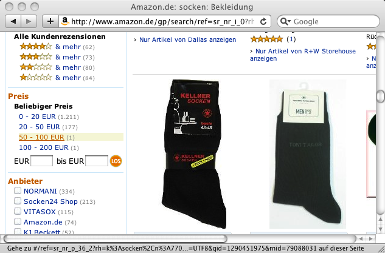

| Usability Pattern | Filter |
|---|---|
| Problem | Benutzer möchten innerhalb einer großen Datenmenge die Übersicht bewahren und nur solche Daten anzeigen, die bestimmte Kriterien erfüllen. |
| Lösung |
Ermögliche Benutzern, dargestellte Daten nach eigenen Kriterien zu filten. Ermögliche Benutzern, Filterkriterien für die Darstellung größerer Datenmengen (z. B. Listen von Datensätzen) selbst festzulegen. Nur Daten, die den Filterkriterien genügen, werden bei aktivem Filter angezeigt. Biete eine einfache Möglichkeit, die Filterung der Daten an- und auszuschalten. Wenn der Filter aktiv ist, sollte dies für Benutzer deutlich erkennbar sein, da in diesem Fall nicht alle Daten, sondern ggf. nur eine Teilmenge der gesamten Datenmenge angezeigt wird. Die möglichen Filterkriterien sollten sich nach der Art der dargestellten Daten richten. Bei Datensätzen sollten Benutzer Filterkriterien für die Werte einzelner Datenfelder festlegen können (z. B. bei Adressdatensätzen ein Filterkriterium für das Datenfeld Land, für das Benutzer die anzuzeigenden Länder angeben). Für typische Aufgaben der Benutzer können Filterkriterien auch vordefiniert und sinnvoll benannt werden (z. B. ein Kriterium 'Volljährige Personen' für die Anzeige von Personendatensätzen von Personen, deren Alter 18 oder älter ist). Für erfahrene Benutzer sollte die Möglichkeit angeboten werden, mehrere Filterkriterien zu kombinieren (z. B. UND- oder ODER-verknüpfen). |
| Illustration | In einem Online-Banking-System können Benutzer die Kontobewegungen (Überweisungen, Abbuchungen etc.) ihres Kontos in Tabellenform anzeigen lassen. Da es sich dabei um eine große Zahl von Kontobewegungen handeln kann, können Benutzer als Filterkriterium einen Zeitraum angeben, für den die Kontobewegungen angezeigt werden sollen. Kontobewegungen außerhalb des angegebenen Zeitraums blendet das System aus. Auf diese Weise wird die Übersichtlichkeit der Darstellung erhöht und die Benutzer finden schneller die Informationen, die sie suchen. |
| Beispiel |
Amazon.de Online-Shop Benutzer können die angezeigten Artikel im Online-Shop Amazon.de nach verschiedenen Kriterien filtern. Das System bietet Benutzern dabei sowohl vordefinierte, zu den jeweiligen Produkten passende Filterkriterien an (im Bild: Filter ‚Anbieter‘) als auch frei definierbare Filterkriterien (im Bild: Filter ‚Preis‘) an. Mehrere Filterkriterien können kombiniert werden (UND-Verknüpfung).  Filterkriterien für die Produktanzeige bei Amazon.de |
| Nutzungskontext |
|
| Begründung | Frei definierbare Filterkriterien erlauben Benutzern, die Darstellung umfangreicher Datenmengen zu beeinflussen und so das System an ihre eigenen Arbeitsaufgaben anzupassen. Dies erhöht sowohl die Benutzungseffizienz als auch die Zufriedenheit der Benutzer. |
| Risiken, Nachteile, Kosten | Bei der Darstellung gefilterter Daten muss für Benutzer deutlich erkennbar sein, dass ein Teil der Daten vom System ausgeblendet wird. Andernfalls besteht die Gefahr, dass Benutzer die angezeigten Daten als „vollständig“ betrachten, falsche Schlüsse ziehen oder irritiert sind, weil sie vorhandene, aber ausgeblendete Daten vermissen. In jedem Fall muss das System Benutzern deshalb eine einfache und gut sichtbare Möglichkeit bieten, den Filter auszuschalten und alle Daten anzuzeigen. |
| Anforderungserhebung |
Identifiziere Aktionen, bei denen größere Datenmengen angezeigt werden (z. B. Listen oder Tabellen mit mehr als 20 Einträgen).
|
| Anforderungsspezifikation |
Spezifiziere globale Vorgaben für den Einsatz des Usability Patterns „ Filter “:
Spezifiziere, für welche Interaktionen das Usability Pattern „ Filter “ eingesetzt wird. Annotiere und ergänze dazu vorhandene Use Cases :
|
{kind=link}